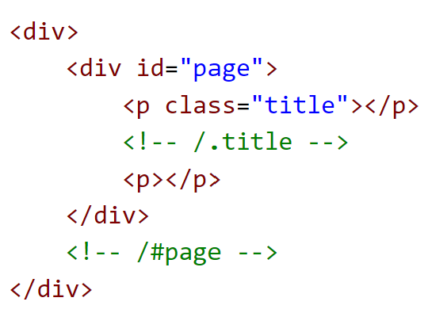
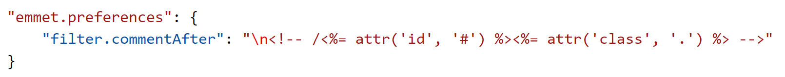
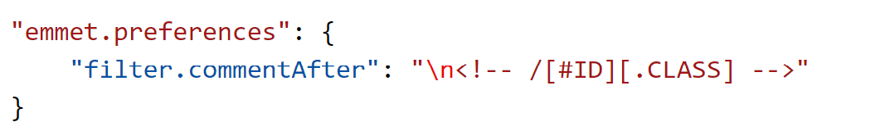

How to expand Emmet abbreviations and snippets
Emmet abbreviation and snippet expansions are enabled by default in html, haml, pug, slim, jsx, xml, xsl, css, scss, sass, less and stylus files, as well as any language that inherits from any of the above like handlebars and php.

When you start typing an Emmet abbreviation, you will see the abbreviation displayed in the suggestion list. If you have the suggestion documentation fly-out open, you will see a preview of the expansion as you type. If you are in a stylesheet file, the expanded abbreviation shows up in the suggestion list sorted among the other CSS suggestions.
Using Tab for Emmet expansions
If you want to use the Tab key for expanding the Emmet abbreviations, add the following setting:
"emmet.triggerExpansionOnTab": true
This setting allows using the Tab key for indentation when text is not an Emmet abbreviation.
Emmet when quickSuggestions are disabled
If you have disabled the editor.quickSuggestions setting, you won't see suggestions as you type. You can still trigger suggestions manually by pressing Ctrl+Space and see the preview.
Disable Emmet in suggestions
If you don't want to see Emmet abbreviations in suggestions at all, then use the following setting:
"emmet.showExpandedAbbreviation": "never"
You can still use the command Emmet: Expand Abbreviation to expand your abbreviations. You can also bind any keyboard shortcut to the command id editor.emmet.action.expandAbbreviation as well.
Emmet with multi-cursors
You can use most of the Emmet actions with multi-cursors as well:

Using filters
Filters are special post-processors that modify the expanded abbreviation before it is output to the editor. There are 2 ways to use filters; either globally through the emmet.syntaxProfiles setting or directly in the current abbreviation.
Below is an example of the first approach using the emmet.syntaxProfiles setting to apply the bem filter for all the abbreviations in HTML files:
"emmet.syntaxProfiles": {
"html": {
"filters": "bem"
}
}
To provide a filter for just the current abbreviation, append the filter to your abbreviation. For example, div#page|c will apply the comment filter to the div#page abbreviation.
BEM filter (bem)
If you use the Block Element Modifier (BEM) way of writing HTML, then bem filters are very handy for you to use. To learn more about how to use bem filters, read BEM filter in Emmet.
You can customize this filter by using the bem.elementSeparator and bem.modifierSeparator preferences as documented in Emmet Preferences.
Comment filter (c)
This filter adds comments around important tags. By default, "important tags" are those tags with id and/or class attribute.
For example div>div#page>p.title+p|c will be expanded to:
You can customize this filter by using the filter.commentTrigger, filter.commentAfter and filter.commentBefore preferences as documented in Emmet Preferences.
The format for the filter.commentAfter preference is different in VS Code Emmet 2.0.
For example, instead of:
in VS Code, you would use a simpler:
Trim filter (t)
This filter is applicable only when providing abbreviations for the Emmet: Wrap with Abbreviation command. It removes line markers from wrapped lines.